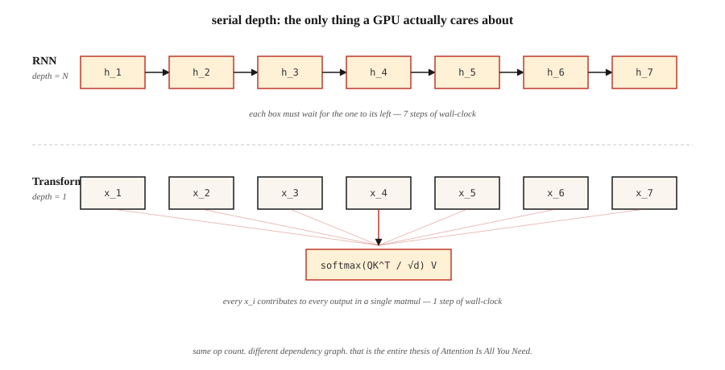

Why Transformers — The Problems with RNNs
RNNs process tokens one at a time. Transformers process all tokens at once. That single architectural bet changed every scaling curve in deep learning after 2017.
- Type
- Learn
- Languages
- Python
- Prerequisites
- Phase 3 (Deep Learning Core), Phase 5 · 09 (Sequence-to-Sequence), Phase 5 · 10 (Attention Mechanism)
- Time
- ~45 minutes
#The Problem
Before 2017, every state-of-the-art sequence model on the planet — language, translation, speech — was a recurrent neural network. LSTMs and GRUs won ImageNet-equivalent translation benchmarks for half a decade. They were the only tool anyone had.
They had three fatal weaknesses. Sequential computation meant you could not parallelize along the time axis: token t+1 needs the hidden state from token t. A 1,024-token sequence meant 1,024 serial steps on a GPU that can do 1,000,000 floating-point ops per cycle. Training wall-clock time scaled linearly with sequence length on hardware designed for parallelism.
Vanishing gradients meant information 50 tokens back was already compressed through 50 non-linearities. Gated recurrent units (LSTM, GRU) softened the crush but never eliminated it. Long-range dependencies — "the book I read last summer on a plane to Kyoto was…" — routinely failed.
Fixed-width hidden states meant the encoder squeezed the entire source sequence into a single vector before the decoder saw anything. Doesn't matter if the source is 5 tokens or 500; the bottleneck is the same shape.
The 2017 paper "Attention Is All You Need" proposed something radical: drop recurrence entirely. Let every position attend to every other position in parallel. Train in one big matrix multiplication instead of 1,024 sequential ones.
The result dominates every modality by 2026. Language (GPT-5, Claude 4, Llama 4), vision (ViT, DINOv2, SAM 3), audio (Whisper), biology (AlphaFold 3), robotics (RT-2). Same block, different inputs.
#The Concept

Recurrence as a bottleneck. An RNN computes h_t = f(h_{t-1}, x_t). Each step depends on the previous. You cannot compute h_5 before h_4. On modern GPUs with 10,000+ parallel cores, this wastes 99% of the silicon on a long sequence.
Attention as a broadcast. Self-attention computes output_i = sum_j(a_ij * v_j) for every pair (i, j) simultaneously. The whole N×N attention matrix fills in one batched matmul. No step depends on another. GPUs love it.
The speedup is not a constant. It is the difference between O(N) serial depth and O(1) serial depth. In practice, transformers train 5–10× faster per epoch on matched hardware at N=512, and the gap widens with sequence length until you hit the O(N²) memory wall of attention (which Flash Attention later fixed — see Lesson 12).
What transformers cost. Attention memory scales as O(N²). For 2K context, fine. For 128K context, you need sliding windows, RoPE extrapolation, Flash Attention tiling, or linear attention variants. Recurrence was O(N) in both time and memory; transformers trade time for memory and then win the time back through parallelism.
The inductive bias shift. RNNs assume locality and recency. Transformers assume nothing — every pair is a candidate for attention. That is why transformers need more data to train well but scale further once they have it. Chinchilla (2022) formalized this: given enough tokens, a transformer always beats an RNN of equal parameter count.
#Build It
No neural network here — we simulate the core bottleneck numerically so you feel the gap on your laptop.
#Step 1: measure serial depth
See code/main.py. We build two functions. One encodes a sequence as a chain of additions (serial, like an RNN). One encodes it as a parallel reduction (broadcast, like attention). Same math, different dependency graph.
def rnn_style(xs):
h = 0.0
for x in xs:
h = 0.9 * h + x # can't parallelize: h depends on previous h
return h
def attention_style(xs):
return sum(xs) / len(xs) # every x is independentWe time both on sequences up to 100,000 elements. The RNN version is O(N) and a single CPU pipeline. Even in pure Python, the attention-style reduction beats it at length ≥ 1,000 because Python's sum() is implemented in C and iterates without interpreter overhead per step.
#Step 2: count theoretical operations
Both algorithms do N adds. The difference is dependency depth: how many operations must happen sequentially before the next can start. RNN depth = N. Attention depth = log(N) with a tree reduction, or 1 with a parallel scan. Depth, not op count, decides GPU time.
#Step 3: empirical scaling on long sequences
We print a timing table that makes the O(N) gap visible. On a 2026 Mac laptop, sequences under 1,000 elements are too fast to measure. Sequences of 100,000 show a clean linear scan. Scale that to a 16,384-token transformer with a 12-layer LSTM equivalent and you see why training wall-clock was a blocker in 2016.
#Use It
When to still pick an RNN in 2026:
| Situation | Pick |
|---|---|
| Streaming inference, one token at a time, constant memory | RNN or state-space model (Mamba, RWKV) |
| Very long sequences (>1M tokens) where attention memory explodes | Linear attention, Mamba 2, Hyena |
| Edge device with no matmul accelerator | Depthwise-separable RNN still wins on FLOPs/watt |
| Anything else (training, batched inference, context up to 128K) | Transformer |
State-space models (SSMs) like Mamba are essentially RNNs with structured parameterization that gives them the best of both: O(N) scan memory, parallel training via selective scan. They recover 90% of transformer quality with better long-context scaling. In 2026 most frontier labs train hybrid SSM+transformer models (e.g. Jamba, Samba) — recurrence is not dead, it is a component.
#Ship It
See outputs/skill-architecture-picker.md. The skill picks an architecture for a new sequence problem given length, throughput, and training-budget constraints. It should always refuse to recommend a pure RNN for training runs above 1B tokens without stating the trade-off.
#Exercises
- Easy. Take
rnn_stylefromcode/main.pyand replace the scalar hidden state with a length-64 vector of hidden states. Re-measure. How much does the serial overhead grow with hidden-state dimension? - Medium. Implement a parallel prefix-sum (Hillis-Steele scan) in pure Python. Verify it produces the same numerical output as a serial scan on length 1024. Count the depth.
- Hard. Port the attention-style reduction to PyTorch on GPU. Time both as you sweep sequence length from 64 to 65,536. Plot and explain the curve shape.
#Key Terms
| Term | What people say | What it actually means |
|---|---|---|
| Recurrence | "RNNs are sequential" | Computation where step t depends on step t-1, forcing serial execution along the time axis. |
| Serial depth | "How deep the graph is" | Longest chain of dependent ops; bounds wall-clock even on infinite hardware. |
| Attention | "Let tokens look at each other" | Weighted sum sum_j a_ij v_j where a_ij comes from a similarity score between positions i and j. |
| Context window | "How much the model sees" | Number of positions an attention layer can take as input; quadratic memory cost scales here. |
| Inductive bias | "Assumptions baked into the architecture" | Prior about what the data looks like; CNNs assume translation invariance, RNNs assume recency. |
| State-space model | "RNN with algebra behind it" | Recurrence parameterized for parallel training via structured state-space matrices. |
| Quadratic bottleneck | "Why context costs so much" | Attention memory = O(N²) in sequence length; Flash Attention hides the constants, not the scaling. |
#Further Reading
- Vaswani et al. (2017). Attention Is All You Need — the paper that killed recurrence in mainstream NLP.
- Bahdanau, Cho, Bengio (2014). Neural MT by Jointly Learning to Align and Translate — where attention was born, bolted onto an RNN.
- Hochreiter, Schmidhuber (1997). Long Short-Term Memory — the original LSTM paper, for the record.
- Gu, Dao (2023). Mamba: Linear-Time Sequence Modeling with Selective State Spaces — modern recurrent answer to transformers.
Nice. That's 5 minutes of Transformers Deep Dive behind you.
Continue to Self-Attention from Scratch →